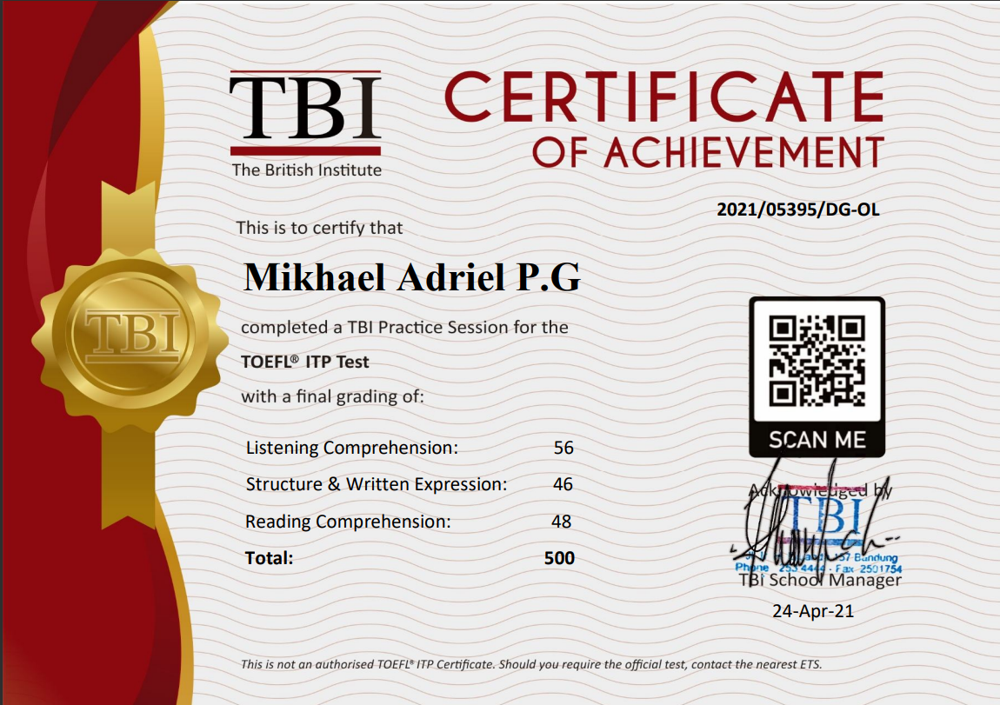
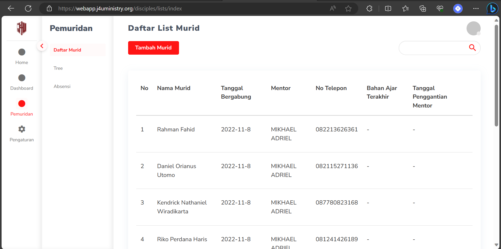
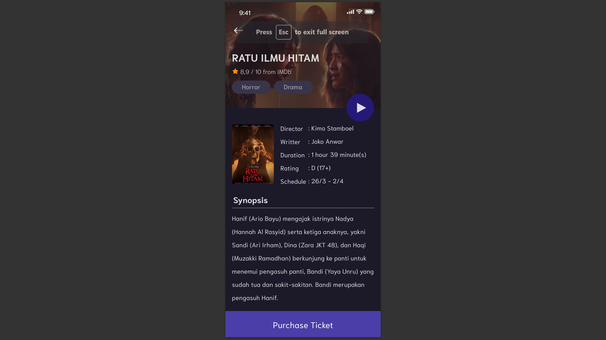
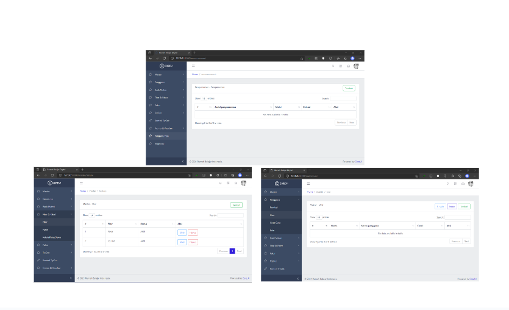

Hi, I'm Mikhael
Adriel.
A QA Automation Engineer and Software Developer passionate about building fast, reliable, accessible, and scalable digital products. Welcome to my portfolio.
Education
Computer Science
Bachelor Degree • Graduated 2023
Natural Science Major
Senior High School • Graduated 2018
Experiences
PT. Bank Mandiri (Persero) Tbk., Jakarta
As a QA Automation Engineer, I specialize in functional test automation to ensure application integrity, performance, and reliability. I have hands-on experience with tools such as Katalon Studio, Java, Node.js, Selenium, Appium, Postman, Jenkins, and Git, which I use to automate testing for both web and Android applications.
- Developed and maintained comprehensive automated test scripts using Katalon Studio for web and mobile platforms.
- Enhanced regression and integration test suites, significantly increasing test coverage and reducing manual testing efforts.
- Collaborated with cross-functional teams to identify and resolve defects, improving system stability and accelerating release cycles.
PT. Supernova Palapa Nusantara, Bandung
As a Backend Engineer, I led the development of backend services for a custom Point-of-Sale (POS) system integrated into an ERP platform. I focused on building scalable APIs and ensuring seamless interaction with frontend components for real-time data handling.
- Built a backend system for a custom Point-of-Sale (POS) application using NestJS, Prisma, and PostgreSQL.
- Integrated backend APIs with frontend services built in Nuxt and styled using Tailwind CSS.
- Ensured responsive data operations and consistent data flow across the system.
J4U Ministry, Bandung
Maintained and enhanced an internal application for J4U Ministry, focusing on streamlining administrative workflows and improving operational efficiency. Contributed to both frontend and backend development to optimize performance and user experience.
- Refactored and improved admin panel interfaces and backend workflows using Laravel, Vue.js, and PostgreSQL.
- Identified and resolved data flow bottlenecks; optimized CRUD operations to enhance application performance and usability.
- Provided ongoing support and maintenance, addressing bugs and implementing new features in close collaboration with internal stakeholders.
PT. Walden Global Service, Bandung
Participated in a backend development bootcamp focused on enterprise-level solutions, emphasizing modern backend development practices. Contributed to building robust REST APIs and integrating data services for scalable applications.
- Developed RESTful APIs using Java Spring Boot, adhering to clean architecture and REST principles.
- Designed and implemented efficient PostgreSQL database operations to support core application features.
PT. Visi Teguh Kreatif, Bandung
Implemented foundational modules for internal tools aimed at idea generation, productivity enhancement, and administrative improvements. Focused on translating user requirements into fully functional web applications.
- Developed web applications using Laravel, HTML, CSS, JavaScript, AJAX, Bootstrap, and MySQL, aligned with user requirements and business goals.
- Designed and structured relational databases based on functional and user specifications to ensure data consistency and performance.
- Conducted testing and implemented features to validate compliance with system requirements and improve reliability.
I2C Studio, Bandung
Implemented ISO assessment instrument modules for internal use to enhance productivity, streamline administrative processes, and reinforce quality assurance practices. Focused on developing scalable web features and ensuring data integrity aligned with organizational goals.
- Developed application features and designed relational databases using Laravel, HTML, CSS, JavaScript, jQuery, Bootstrap, and PostgreSQL.
- Translated user requirements into functional modules that supported ISO assessment workflows and reporting capabilities.
- Conducted thorough testing and successfully deployed the application to ensure compliance with performance, functionality, and quality standards.
PT. Rumah Belajar Indonesia, Bandung
Implemented foundational modules for a Learning Management System (LMS) and learning package management tools to improve productivity and streamline administrative processes for internal use. Emphasized aligning development with user requirements and enhancing usability.
- Designed and evaluated UML diagrams based on user requirements to ensure the final product met functional expectations.
- Developed a web-based application using PHP with the Laravel framework, Livewire, HTML, CSS, JavaScript, AJAX, Bootstrap, CoreUI, and various plugins/libraries, backed by PostgreSQL.
- Conducted comprehensive testing and deployed the application to verify alignment with technical specifications and user expectations.
Certifications

TOEFL ITP
Completed and certified in TOEFL ITP English proficiency test.
Projects

J4U WebApp
Website providing information on activities held by J4U Ministry to satisfy user experience. Built with Laravel and Vue.js.

Theatrum
Mobile application providing detailed information related to films. Final project of mobile development major, built using Kotlin.

PT Rumah Belajar Indonesia WebApp
Implemented foundational modules for learning features and internal use to increase productivity and administration improvement.
PT. Visi Teguh Kreatif Telkom Leapup
Implemented foundation modules for idea generation and internal use to increase productivity and administration efficiency.